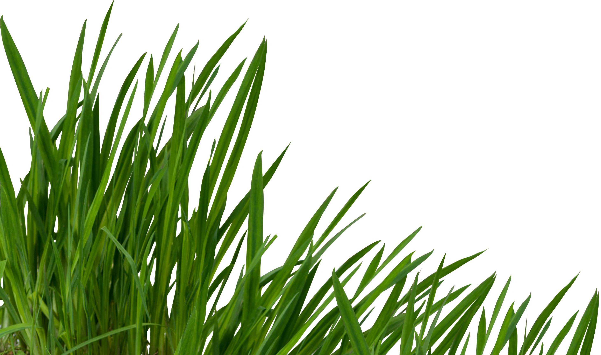

Have you even once tried to touch the grass?
Touching grass might seem trivial at first, but beneath its humble blades lies a profound connection to nature's rhythm.
Embrace the experience, and let the simple act of touching grass inspire you to thrive and bloom in every aspect of your life.
